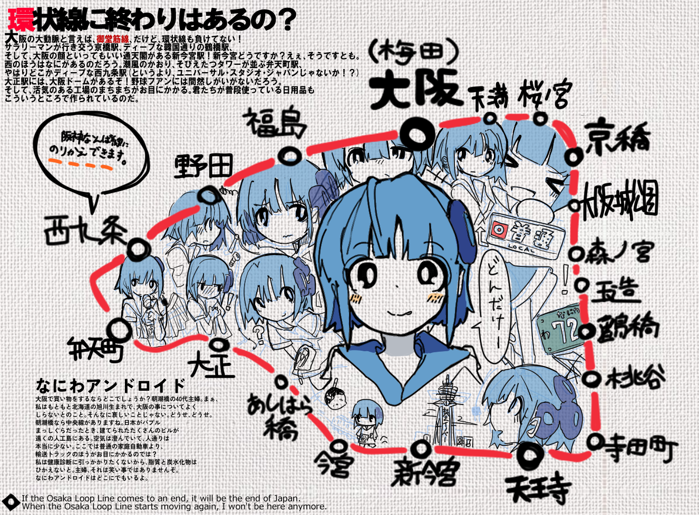

※当サイト「ねずみのことばばこ」に掲載されている
文章・画像・音声等の著作権は、
特に明記のない限り作者に帰属します。
個人での閲覧を目的とする場合を除き、無断転載・無断複製としての利用を禁止します。
本サイトの内容を利用したことによって生じたいかなる損害についても、作者は一切の責任を負いません。
Unless otherwise stated, all texts, images, and audio on this website
"Nezumi no Kotobabako" are the property of the author.
Unauthorized reproduction, redistribution, or use of the contents—including is strictly prohibited.
The author assumes no responsibility for any damages resulting from the use of this website.